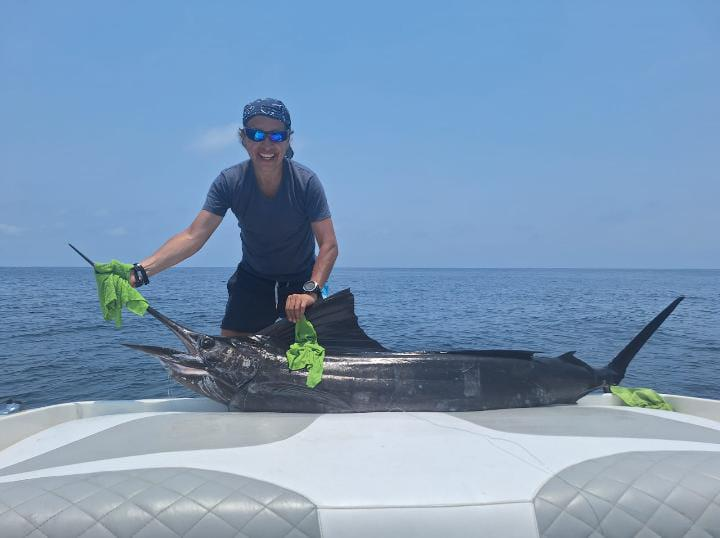

Nuestros Servicios
Cursos De Buceo
Perfecto para principiantes, aprende lo básico con instructores certificados.
Certificados PADI
Acreditación internacional para bucear en todo el mundo.
Snorkel
Nadar en la superficie del agua mientras se observa el fondo marino.
Kayak
Una embarcación ligera que se desplaza con remos. Ideal para explorar la costa.
Paddle Board
Navega sobre el agua de pie, tumbado o de rodillas en una tabla de surf de remo.
Wake Board
Actividad náutica donde eres jalado por una lancha mientras vas sobre una tabla.
Pesca Deportiva
Pesca recreativa con caña, ideal para disfrutar el mar y relajarte.

Renta De Yate
Vive una experiencia de lujo navegando en un yate privado en Acapulco.
Jets ski
Motos acuáticas para recorrer la bahía y disfrutar una experiencia extrema.
Galería